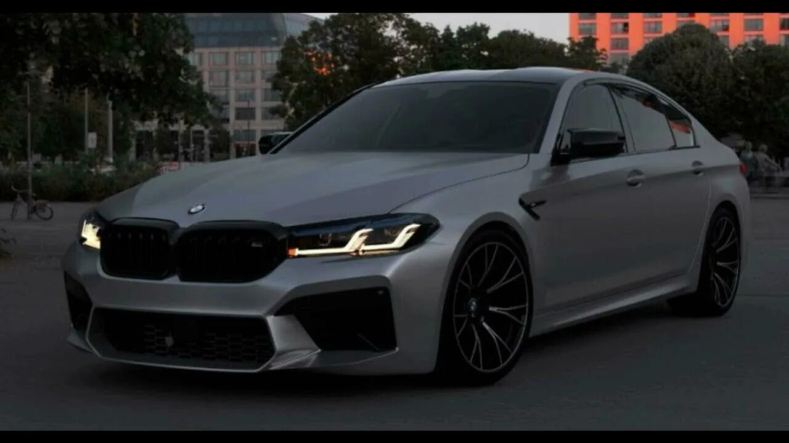

Технические характеристики
Двигатель: 4.4 л V8 с двойным турбонаддувом
Мощность: 600 л.с.(в версии Competition)
Крутящий момент: 750 Нм
Разгон 0-100 км/ч: 3.4 сек
Привод: Полный (M xDrive) с возможностью отключения передней оси
Коробка передач: 8-ступенчатый автомат (Steptronic)
Максимальная скорость: 250 км/ч (с пакетом M Driver’s Package – 305 км/ч)
Краткая история BMW 5 серии
1. Первое поколение (E12, 1972–1981)
- Дебют в 1972 году как замена модели BMW New Class.
- Первая серийная модель BMW с обозначением "5".
- Двигатели: от 1.8 л (90 л.с.) до 3.0 л (184 л.с., топовая 530 MLE).
- Задний привод, классический дизайн.
2. Второе поколение (E28, 1981–1988)
- Улучшенная аэродинамика, новый интерьер.
- Первая BMW M5 (1984) на базе E28 с 3.5 л (286 л.с.).
- Появились дизельные двигатели.
3. Третье поколение (E34, 1988–1996)
- Более округлый дизайн, улучшенная безопасность.
- Полноприводная версия 525iX.
- M5 получила 3.8 л (340 л.с.).
4. Четвертое поколение (E39, 1995–2003)
- Один из самых надежных BMW в истории.
- Алюминиевая подвеска, новый дизайн.
- M5 с 5.0 л V8 (400 л.с.).
5. Пятое поколение (E60/E61, 2003–2010)
- Спорный дизайн Криса Бэнгла.
- Первая 5 серия с iDrive.
- M5 с 5.0 л V10 (507 л.с.).
6. Шестое поколение (F10/F11/F07, 2010–2017)
- Возврат к классическому стилю.
- Появились гибриды (ActiveHybrid 5).
- M5 с 4.4 л V8 битурбо (560 л.с.).
7. Седьмое поколение (G30/G31, 2016–2023)
- Современные технологии, облегченная платформа.
- M5 Competition (625 л.с.), гибридные версии.
8. Восьмое поколение (G60, с 2023)
- Электрическая BMW i5 (до 601 л.с. в i5 M60).
- Гибриды, цифровые технологии.
5 серия остается одной из самых популярных бизнес-седанов BMW, сочетая комфорт, технологии и динамику. üöóüí®